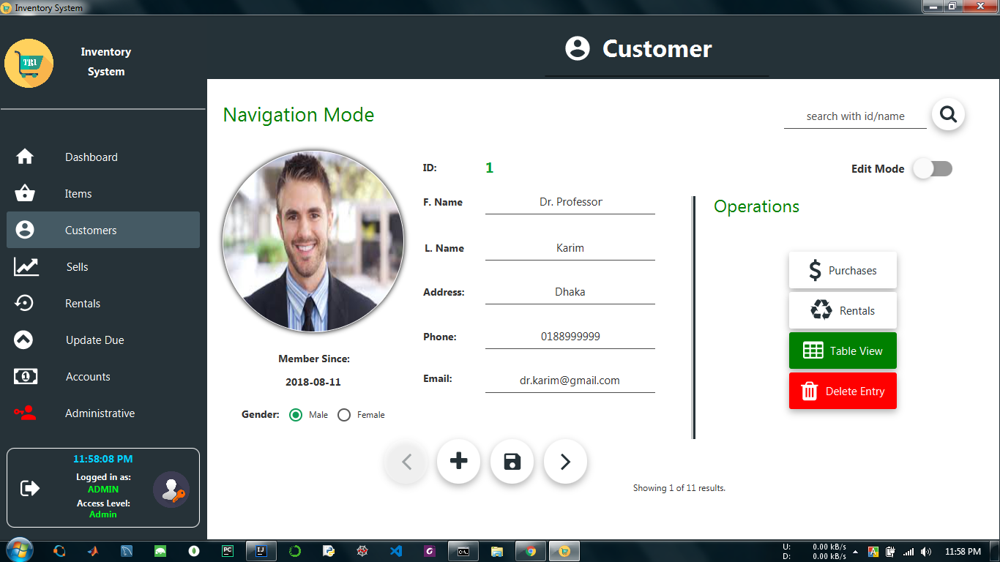
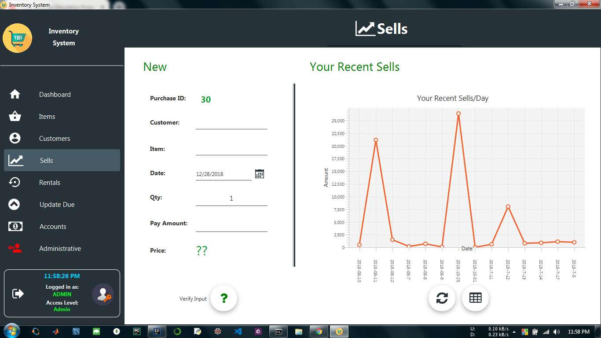

About
I've worked in this project during during my RDBMS course. This project is built in purpose to make it easier to manage an inventory system. It will keep track of inventory items, customers, sells, rents etc. Multiple access level is used in the system so that different user can have different access privileges. The system is made in a way so that every ordinary user will find the system as his/her own. That is no user can access other user's data except admin. Everu user can visualize their sale or rentals graphically. Admin can track all user's activity like sells & rentals. Admin have the privilege to see other's transactions. Day by day report generation is also made easy. There is a lot other features provided in the system. But unfortunately I can't provide any source code or any screencast as I'm working on a book chapter on this project. Still I'm attaching some screenshots hope you'll like it. ;)
Development Tools
IntelliJ IDEA, Gluon Scene Builder, MySQL Workbench
Project Screenshot(s)
1. Dashboard of the System

2. Customer View

3. Sells
Notes
- COPYRIGHT OF THIS PROJECT IS RESERVED & COPYING, SELLING, USING THE DESIGN IS TOTALLY PROHIBITED.
Go Back to Projects Next Project